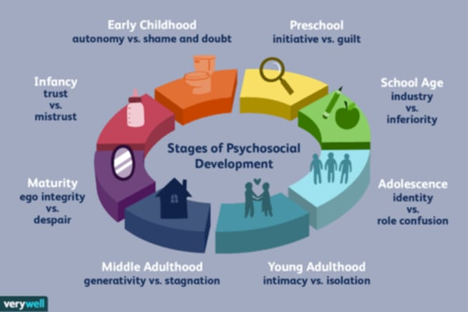
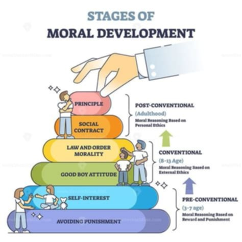

Moral character is the person's will directing them towards a recognized ideal. Moral character, a subset of individual variants relevant to morality, is an individual's inclination to behave, feel, and think morally or immorally.
The natural behaviors of self-governing, self-determining, and man are called self-actions. Excellent character results from developing virtues, moral behavior, and an awareness of what is good. These things all lead to a tendency and inclination toward the good.
Kohlberg's theory of moral development outlines six stages of moral reasoning in children, for understanding how moral reasoning changes in children over time.
At the preconventional level, morality is externally controlled to avoid punishment or receive rewards. This perspective addresses what’s morally proper or appropriate, personally fulfilling.
Behavior is determined by consequences. Moral reasoning is based on avoiding punishment. Punishment/obedience is determined from the individual's behavior.
Behavior is again determined by consequences. At this stage, individual interests and the idea of reciprocity serve as the foundation for moral reasoning.
Individuals prioritize conformity to social rules, shifting focus from self-interest to relationships and social systems. People at this level comply with the laws upheld by the government, their parents, and other acquaintances to gain the favor of others or preserve social order.
At this stage, moral reasoning is greatly influenced by the need for social acceptance and legal conformity, marking a move away from self-interest and toward a more thorough understanding of societal norms.
Individuals value maintaining harmonious relationships with others and may be more concerned about how their actions affect the feelings of others.
The effectiveness of law and order depends on the moral character of individuals within society. When people are guided by principles of honesty, integrity, and empathy, they are more likely to obey the law and contribute to a just and equitable society.
This resembles being a superhero who follows their own sense of right and wrong, believing in justice and helping others, regardless of the cost.
Picture a group of people living together. They establish rules to create a safer and more peaceful environment. These rules outline acceptable behavior, and breaking them can result in consequences.
This principle is often considered universal, but its interpretation and application can vary across cultures and contexts. Furthermore, there is ongoing debate about whether it's possible to define truly universal ethical principles that apply to all people in all situations.
 Contributors: Antalan, Lynus Rhyan M., Canas, John Paul